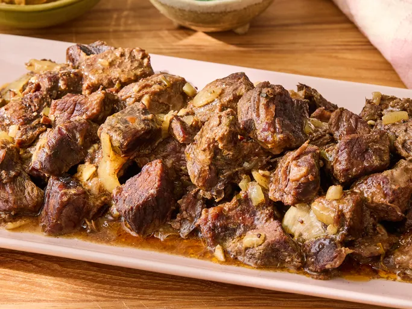

Slow Cooker Cowboy Butter Steak Bites
Home

Description
These slow cooker cowboy butter steak bites come out incredibly tender and tasty. They are slow cooked in a rich,
buttery sauce packed with garlic, fresh herbs, Dijon, and a hint of smoky spice.
Ingredients
- 1 cup sliced onion
- 3 pounds boneless beef chuck roast, trimmed and cut into 1- to 1 1/2-inch cubes
- 1 1/2 teaspoons kosher salt
- 1/2 cup salted butter, softened
- 4 cloves garlic, minced
- 1 tablespoon chopped fresh flat-leaf parsley, plus more for garnish
- 1 tablespoon chopped fresh chives, plus more for garnish
- 2 teaspoons Dijon mustard
- 1 teaspoon freshly grated lemon zest
- 1 teaspoon lemon juice
- 1 teaspoon smoked paprika
- 1/2 teaspoon freshly ground black pepper
- 1/2 teaspoon chopped fresh thyme
- 1/4 teaspoon chili powder
- 1/4 teaspoon crushed red pepper
- 1/2 cup beef broth
Directions
- Place onion in the bottom of a 6- to 7-quart slow cooker and top with steak cubes. Sprinkle with salt.
- For cowboy butter, stir together butter, garlic, parsley, chives, Dijon mustard, lemon zest, lemon juice,
smoked paprika, black pepper, thyme, chili powder, and crushed red pepper in a small bowl.
- Dollop half of the cowboy butter over steak. Pour broth around the edges. Cover and chill remaining cowboy butter.
- Cover and cook on Low until meat is tender, about 6 hours.
- Transfer steak and onions to a serving dish using a slotted spoon. Spoon some cooking liquid over the top, if desired.
Top with dollops of remaining cowboy butter and garnish with additional parsley and chives.